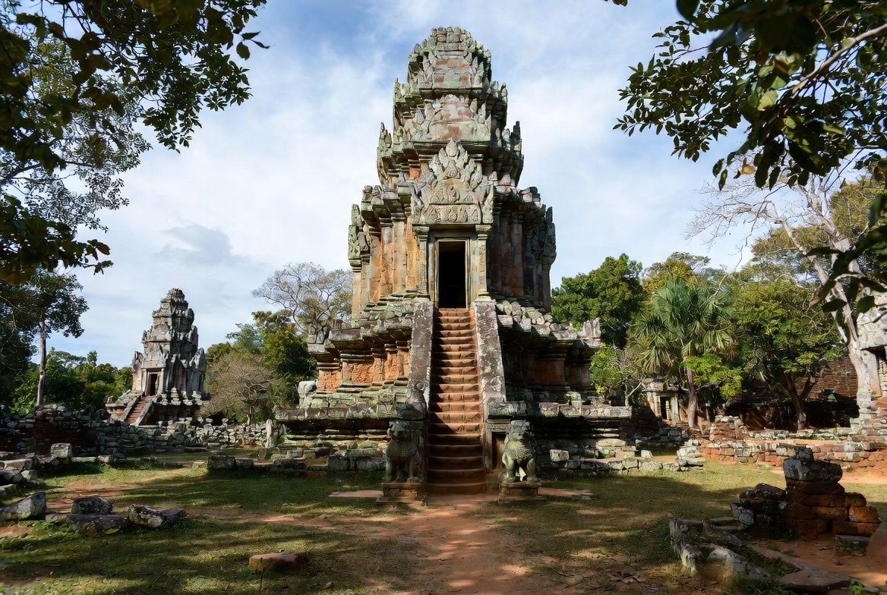
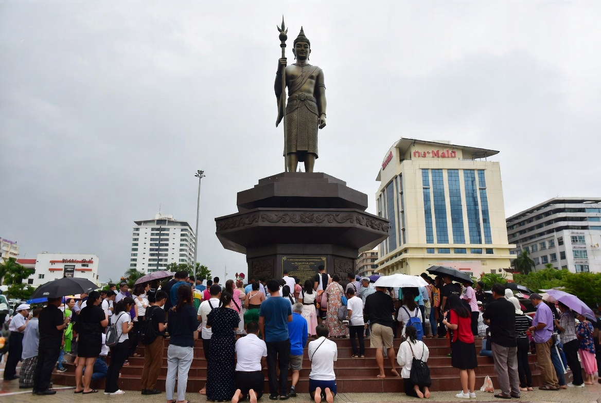
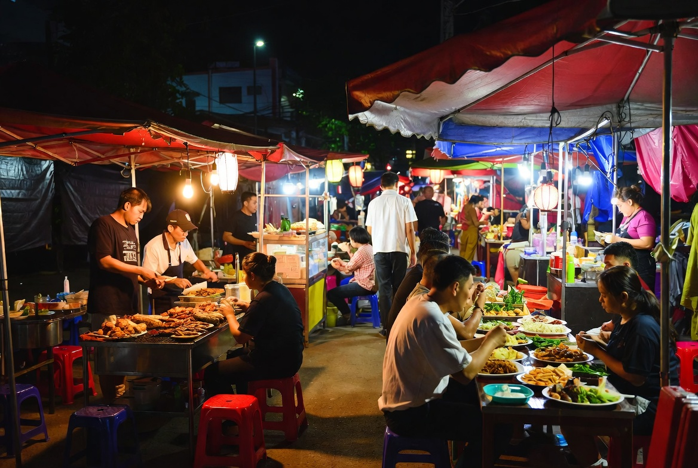
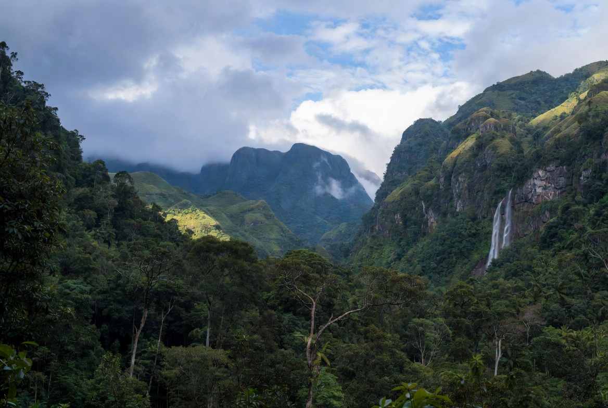

Nakhon Ratchasima (Korat) Travel Guide
Nakhon Ratchasima, almost always called Korat by locals and travellers, is the largest city in Isan and an important transport and commercial hub. It is not a classic sightseeing destination in its own right, but it sits close to two excellent day-trip attractions — Phimai Historical Park and Khao Yai National Park — and has a lively local food and market scene. Many people use it as a practical base or overnight stop when exploring the northeast or heading toward the Cambodian border region.

How to Get There
By bus
Frequent buses leave from Bangkok’s Mo Chit (Mochit) Bus Terminal. Journey time is typically 3.5–4.5 hours. This is the most straightforward and popular option.
By train
Several trains a day run from Bangkok to Nakhon Ratchasima. Journey time is around 4–5.5 hours depending on the service. Tickets are inexpensive.
By car
The drive via Mittraphap Road (Highway 2) takes about 3.5–4 hours under normal conditions.
Within the city, songthaews, tuk-tuks and Grab are easy to use. The centre is reasonably compact around the main monument and market areas.

Climate & Best Time to Visit
Korat has a classic Isan climate with distinct seasons.
Best time: November to February
Cooler, dry weather that is comfortable for day trips and walking around the city. This is the most pleasant period overall.
Hot season: March and April
Temperatures rise sharply and the heat can be intense and dry.
Rainy season: May to October
Heavier rain, especially from July to September. The countryside is greener, but outdoor plans (particularly in Khao Yai) can be affected. Prices are lower.

What You’ll Love Doing Here
The two strongest reasons to visit the area are outside the city itself. Phimai Historical Park, about an hour north, is one of Thailand’s finest Khmer temple complexes — well preserved, atmospheric and less crowded than the big Cambodian sites. Khao Yai National Park, roughly 1–1.5 hours away, offers forest trails, waterfalls, wildlife spotting and a cooler climate. Many people base themselves in Korat or nearby Pak Chong for park visits.

In the city, the Thao Suranari (Ya Mo) Monument is the local landmark and a place of genuine respect. Night markets and street-food areas are lively and good for Isan specialities — som tam, grilled meats, sticky rice and spicy salads. The overall atmosphere is everyday Thai provincial life rather than tourist infrastructure.
Evenings are low-key. Most visitors eat at the markets or a simple restaurant and rest before the next day’s trip.
Pros and Cons
What people love
- Excellent day-trip access to Phimai and Khao Yai
- Good Isan food and lively local markets
- Convenient transport links from Bangkok
- Authentic, non-touristy city atmosphere
- Practical and affordable base for exploring the region
What can frustrate people
- Limited major attractions inside the city itself
- Hot season can be extremely hot
- Less English and tourist polish than major destinations
- Can feel purely functional if you do not leave the city
- Not a place for beaches or dramatic scenery within the urban area
Why Go
Korat works best as a practical base or short stop rather than a destination in its own right. Use it to reach Phimai and Khao Yai, enjoy the local food, and get a sense of everyday Isan city life. It is easy to reach from Bangkok, well connected, and useful. If you are exploring the northeast or combining history and nature, a night or two here makes solid logistical and cultural sense.